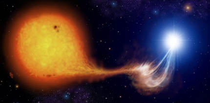

DIBS

Accretion Column
An accretion column is formed when material is accreted onto an object such as a highly magnetized white dwarf or neutron star. The material can be funneled through the magnetic field lines onto the surface of the compact object down to its magnetic poles (Semena et al. 2012). The material flowing through the magnetic field lines is moving supersonically, and then it's rapidly decelerated, creating a shock wave and a hot region between the compact object and the shock surface. This hot zone is a source of strong X-ray emission (Ferrigno et al. 2016).

Artist’s representation of an accretion column flowing from a main sequence star to a magnetic white dwarf. Credit: M. Garlick